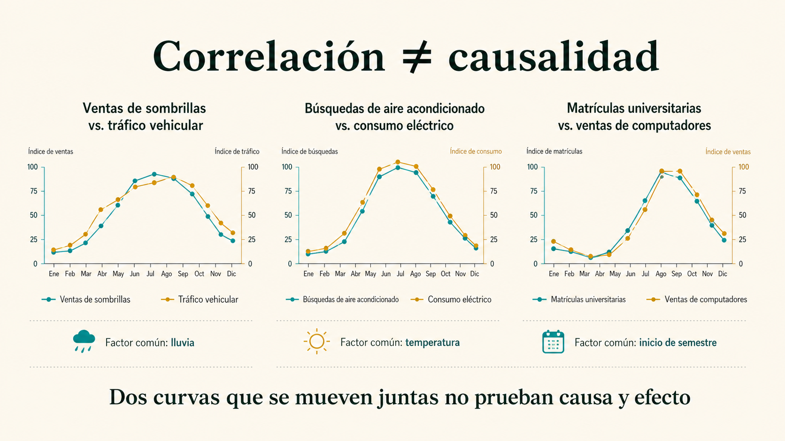

Modelación y analítica: los datos son brújula cuando sabes formular la pregunta correcta.
Vivimos rodeados de datos: cada like, cada compra, cada búsqueda en Google. Tener datos no es ventaja; saber convertirlos en decisiones sí. Este bloque te enseña a hacer preguntas que se puedan responder con evidencia, sin caer en las trampas que les hacen los números a los que no entienden.
Modelo fenómenos económicos mediante inferencia, probabilidad, riesgo y lectura crítica de datos para transformar incertidumbre en decisiones sustentadas.
Un modelo es como un simulador de vuelo.
Antes de que un piloto vuele un Boeing 747 con 300 pasajeros, ensaya cientos de horas en un simulador que copia la realidad sin sus riesgos. Un modelo económico hace lo mismo: simplifica el mundo para que puedas probar decisiones sin arriesgar plata, empleo o bienestar reales.
Un mapa de TransMilenio no muestra cada calle, cada semáforo ni cada árbol de Bogotá. Recorta información para que veas lo único importante: cómo conectar dos puntos en bus. Un modelo económico hace lo mismo: deja por fuera mil cosas para mostrarte clarísimas las pocas que importan para tu decisión.
Pregunta
Qué quiero explicar. Ejemplo: ¿la gente pagará más por un empaque biodegradable?
Variables
Qué piezas importan. Precio, ingreso, conciencia ambiental, sustitutos, tendencias y regulación.
Escenario
Qué pasaría si… El modelo permite probar cambios sin ejecutar todavía la decisión real.
Validación
Qué evidencia confirma. Comparar predicción contra datos reales evita enamorarse de una suposición.
Probar una cucharada de sopa para saber a qué sabe la olla.
No necesitas comerte toda la sopa para saber si le falta sal: con una cucharada bien revuelta basta. La inferencia estadística funciona igual: con una muestra bien elegida de 1.200 personas puedes decir cómo decidirá un mercado de un millón.
Lo que sí puedes medir
Encuestas, clics, compras o búsquedas de personas a las que sí puedes llegar. Es tu «cucharada».
El salto inteligente
Convertir esa porción medida en una estimación confiable de lo que hará el grupo completo. La estadística da las herramientas para que el salto no sea adivinanza.
Lo que quieres anticipar
El mercado entero sobre el que vas a decidir precio, inventario o inversión. Es toda la olla que no puedes probar entera.
La inferencia no promete certeza al 100%. Lo que sí promete es tomar una decisión mucho mejor que «con el ojo», siempre y cuando la muestra sí represente al grupo, la pregunta esté bien hecha y entiendas con qué margen de error trabajas.
+ ¿Y qué significa que una muestra «sea representativa»?
Que la composición de tu muestra se parezca a la composición del grupo total. Si quieres saber qué piensan los jóvenes colombianos sobre el café y encuestas solo a estudiantes de un colegio privado en Bogotá, no es representativa: te faltan otras ciudades, otros estratos y la educación pública.
Una muestra representativa cuida tres cosas: suficiente tamaño (que la cucharada no sea de tres gotas), buena selección (revolver bien la olla antes) y que el método no sesgue las respuestas (no le pongas sal antes de probar).
Nada es seguro, pero casi todo se puede estimar.
Hay una diferencia clave que pocos manejan: el riesgo se mide (sabes que puede pasar y con qué probabilidad), la incertidumbre no (ni siquiera puedes listar lo que podría pasar). En los negocios trabajamos con riesgo, no con incertidumbre absoluta. Aquí están los tres tipos que vas a encontrar.
Lanzar una moneda es riesgo: sabes que hay 50% de cara y 50% de sello. Saber qué juego inventará tu sobrino mañana es incertidumbre: ni siquiera puedes enumerar las opciones. Una empresa seria toma decisiones bajo riesgo medible, no bajo pura incertidumbre.
Riesgo de mercado
La demanda puede ser menor a la esperada o cambiar por precio, moda o ingreso del consumidor.
Riesgo operativo
Producción, logística, calidad o proveedores pueden fallar en el momento crítico y romper la cadena.
Riesgo financiero
Intereses, tipo de cambio, inflación o liquidez pueden alterar el plan aun si la operación va perfecta.
Que dos cosas pasen juntas no significa que una cause a la otra.
En verano se vende más helado y hay más incendios forestales. Si un analista descuidado mira solo esos dos datos, podría concluir que «el helado causa incendios». La explicación real está en una tercera variable que no estaba en su tabla: el calor.

Helado
Las ventas suben fuerte en julio.
Calor
La temperatura sube simultáneamente.
Incendios
El calor —no el helado— dispara los incendios.
La identificación de variables exógenas y de instrumentos estadísticos correctos es clave para evitar sesgos endógenos en la toma de decisiones corporativas. Antes de declarar que «A causa B» pregúntate: ¿hay una tercera variable C que mueve a las dos al mismo tiempo?
Un estudio dice: «los niños que duermen con la luz encendida tienen más probabilidad de necesitar gafas». ¿La luz encendida les daña la vista?
No necesariamente. Esto fue un caso real famoso. La variable que faltaba era la miopía de los padres: los papás miopes (que necesitan gafas) tienden a dejar luces encendidas en la noche, y además transmiten genéticamente la miopía a sus hijos. La causa real era genética; la luz era solo coincidencia. Otro ejemplo perfecto de por qué correlación nunca basta para concluir causalidad.

Cuando los datos «mienten»: tres correlaciones reales pero absurdas
Estas tres gráficas son reales: el consumo de queso sí se mueve junto con las muertes por enredo con sábanas, las películas de Nicolas Cage sí coinciden con ahogamientos en piscinas, y los lanzamientos de cohetes sí siguen el ritmo de los doctorados en sociología.
Si solo miras la línea, parece haber relación. Pero no hay causalidad entre ellas. Es el recordatorio visual más potente de por qué un buen analista nunca confunde «se mueven juntas» con «una causa la otra».
Tener datos no es ventaja: convertirlos en decisión sí.
Una empresa puede tener gigas y gigas de información de clientes y no usar ni el 1%. Otra puede tener la mitad pero saber qué preguntar. La diferencia entre las dos es este flujo de cuatro pasos.
Imagina Netflix. Captura qué viste, cuánto rato, qué pausaste, qué buscaste y a qué hora. Limpia y descarta lo que no aplica. Modela con esos datos para predecir qué serie nueva te va a gustar. Y decide ponerla en la portada cuando abres la app. Por eso siempre aparece algo que te llama la atención.
Capturar
Ventas, búsquedas, redes, encuestas, inventarios y precios.
Limpiar
Eliminar ruido, duplicados, sesgos y errores de medición.
Modelar
Encontrar patrones, probabilidades y escenarios comparables.
Decidir
Convertir el hallazgo en precio, producto, inversión o política.
Una marca de ropa que predice colores con redes sociales.
Una compañía de moda analiza patrones en redes para anticipar colores y estilos del próximo semestre. Si acierta, produce el hit antes que el mercado; si falla, acumula inventario que nadie quiere. La diferencia entre éxito y pérdida son los pasos 2 y 3: limpiar bien y modelar con rigor.
«Cuando el algoritmo se equivoca» — sesgos en modelos económicos
Conversación con un data scientist sobre casos reales donde un modelo aparentemente sólido produjo decisiones catastróficas. Útil para cerrar el bloque con sentido crítico, no solo entusiasmo técnico.